In this assignment you will explore some fundamental concepts in machine learning. You will fit functions to data by minimizing loss functions, and you will see three different ways to choose model parameters: analytically, by gradient descent, and by stochastic gradient descent. The same basic learning loop will allow you to do linear regression, polynomial regression, inverse kinematics for a planar robot arm, logistic regression for classification, and predicate classification with validation, preprocessing, and regularization.
As always, you may not use an external code-assistance tool to write significant parts of your code. Since this assignment is mostly split between small functions, any inline code assistance is considered significant. When you get stuck, consult the NumPy documentation, ask questions on the forum, or come to office hours.
This assignment is structured more like a tutorial than the earlier
MPs. To get full credit you need to pass all tests in
tests.py (these are the same tests as the autograder), and
we highly recommend working incrementally through the provided notebook
mp4.ipynb. The notebook provides examples, plots, and
suggested workflows, while this document gives the full mathematical
specification for the functions you must implement (if you choose to
work with the notebook you shouldn’t have to refer to the instructions
for any additional information).
Look inside the template/ directory. It contains:
mp4.py: most of your code for Parts 1-6 goes herepredicate_classifier.py: your code for Part 7 goes
heretests.py: local tests that match the autograder tests;
you should not need to submit to Gradescope until you have finished the
assignment - run this as python tests.py to check your
work, or work through the notebook which runs these one at a timemp4.ipynb: a notebook that walks through the
assignmentdata/: classification and predicate-classification
datasetsplanar_arm.py: utilities for creating and drawing a
planar robot arm (for inverse kinematics)main.py: optional plotting and visualization
utilitiesNotes:
mp4.py; after changing mp4.py, you may need to
rerun imports or restart the kernel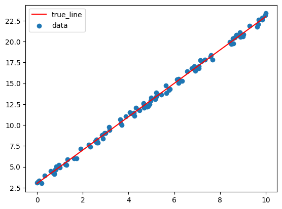
You will start by creating data and implementing the basic pieces needed for linear regression.
Implement:
create_linear_data(num_samples, slope, intercept, x_range, noise)
create_linear_data should return arrays x
and y, each with shape (num_samples, 1)x_i uniformly from the interval
[x_range[0], x_range[1]], and compute \[y_i = \text{slope} \cdot x_i + \text{intercept} +
\epsilon_i\]get_simple_linear_features(x)
get_simple_linear_features(x) should return \[ X = \begin{bmatrix} x & \mathbf{1}
\end{bmatrix} \in \mathbb{R}^{N \times (d+1)}\]linear_prediction(x, A, get_modified_features)
linear_prediction should return \(\hat{y} = X A\),get_modified_features(x)mse_loss(y_pred, y_true)
compute_model_error(x, y, A, get_modified_features)
compute_model_error is just the MSE of the model’s
predictions on the provided data.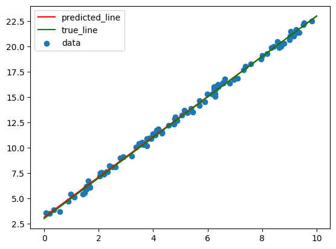
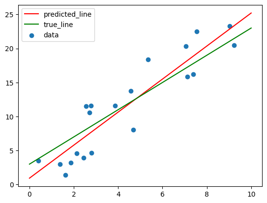
Now you will compute the parameter matrix \(A\) that minimizes mean squared error directly. Given modified features
\[ X \in \mathbb{R}^{N \times m} \]
and labels
\[ y \in \mathbb{R}^{N \times 1}, \]
the least-squares solution is
\[ A = (X^T X)^{-1} X^T y. \]
Implement analytical_linear_regression(X, y) using NumPy
matrix operations. It should return an array with shape
(num_modified_features, 1).
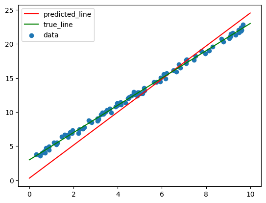
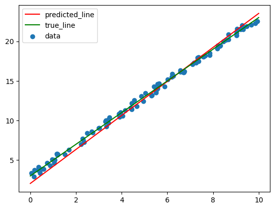
For linear regression, the MSE loss can be written as
\[ L(A) = \frac{1}{N}\lVert y - XA \rVert_2^2. \]
The gradient with respect to \(A\) is
\[ \nabla_A L(A) = \frac{2}{N} X^T(XA - y). \]
Implement get_linear_regression_gradient(A, X, y) to
return this gradient with the same shape as A.
Next, implement gradient_descent. Starting from
A_init, repeatedly update
\[ A \leftarrow A - \alpha \nabla_A L(A) \]
where \(\alpha\) is
learning_rate. The function get_gradient(A) is
provided as an argument so the same gradient descent code can be reused
for different losses.
Then implement stochastic_gradient_descent. Instead of
using the full dataset for every update, SGD uses batches of indices.
For each epoch:
batch_sizeget_batch_gradient(A, indices)A using the same gradient descent update
ruleMake sure to shuffle before each epoch.
np.random.permutation is useful here.
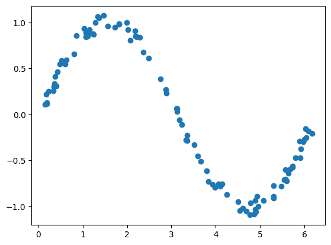
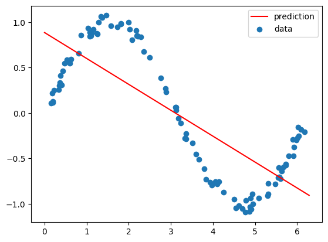
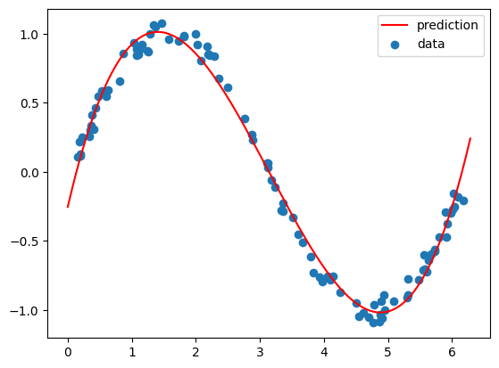
In this part you will reuse linear regression, but with a different feature transform. We will transform the given features into polynomial features and then do linear regression on those transformed features. This is a common trick in machine learning and shows the value of preprocessing your data/features: we can fit more complex nonlinear functions of the original input by transforming the input features and then doing linear regression. Intuitively, this is similar to what a deep neural network does where the last layer computes some linear function of the final hidden layer activations which are nonlinear functions of the original input. Of course, in a neural network that initial nonlinear transformation is learned rather than hand-designed like polynomial features.
To see the value of these new features we first need some new data.
Implement create_sine_data so that x and
y each have shape (num_samples, 1). Sample
each \(x_i\) uniformly from
[x_range[0], x_range[1]], and compute
\[ y_i = \sin(x_i) + \epsilon_i \]
where each \(\epsilon_i\) is sampled uniformly from \([-\text{noise}, \text{noise}]\).
Then implement get_polynomial_features(x, degree). For
an input matrix
\[ x \in \mathbb{R}^{N \times d}, \]
return the polynomial feature matrix
\[ X = \begin{bmatrix} x^{\text{degree}} & x^{\text{degree}-1} & \cdots & x & \mathbf{1} \end{bmatrix}. \]
The return shape should be
\[ (N,\ d(\text{degree}+1)). \]
For this sine-fitting part, num_features (i.e., \(d\)) is usually \(1\), but your implementation should handle
multiple input features. Notice that the final two columns are exactly
what we implemented in get_simple_linear_features! You can
think of this new feature transform as a generalization of the simple
linear features we used earlier.
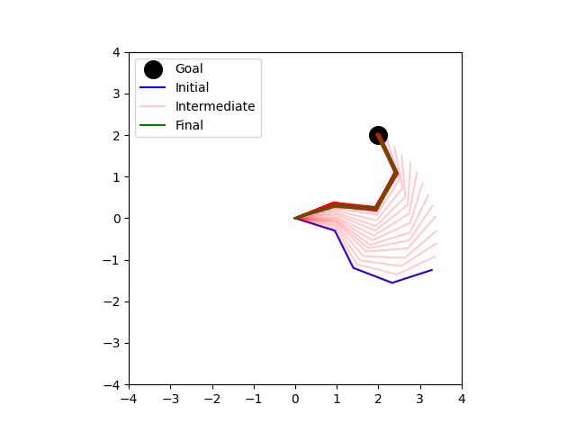
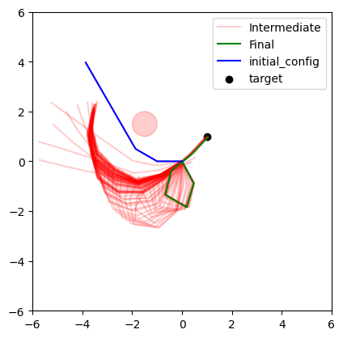
Now you will use gradient descent to update the configuration of a planar arm where a configuration is a vector/array of joint angles. The goal is to move the end effector, meaning the arm tip, close to a desired point in the workspace. This is inverse kinematics and not motion planning as we are not considering collisions with ourselves or obstacles, though later we will see how we can make our loss function incorporate obstacle avoidance (at which point we are essentially doing trajectory optimization). While we could attempt to analytically compute the gradient of the loss function with respect to the configuration (meaning how much closer does our end effector get to the goal as we change the joint angles), this is often geometrically difficult or even impossible for more complex robots. Instead, we will use a simple numerical approximation of the gradient based on finite differences (sampling).
Our main idea is to estimate a local gradient direction by sampling the loss function around the current configuration. One simple approach would be to estimate a local direction by looking for the single nearby sample with the largest loss and treating that as the uphill direction. While this matches the basic intuition that gradients point uphill, it is noisy and throws away most of the samples. A more stable idea is to let every sample vote on which way the gradient should point:
Suppose the current configuration is \(q\), and we sample unit directions \(u_i\). For each sampled direction, we can compute the nearby configuration as \[q_i = q + \epsilon u_i\] for some small step size \(\epsilon\), and therefore the loss at that nearby configuration as \(L(q_i)\). Thus our “vote” for the gradient direction is \(L(q_i) u_i\) - the higher the loss the more this direction should contribute to the overall gradient direction. We can average these votes to get a local estimate of the gradient direction: \[ g = \frac{1}{N}\sum_i L(q_i) u_i \]
and thus the normalized gradient direction is \[ \nabla L(q) = \frac{g}{\lVert g \rVert_2}. \]
As we sample more this becomes a better estimate, but for a small
number of samples it can lead to a biased estimate of the direction. To
see why consider the following simple example: suppose we sample a
direction \(u_i\) and find that moving
in that direction gives a loss of 100, but what if the loss
at the current configuration is also 100? Then this
direction is not an actual uphill direction! Again, with enough samples
this will cancel out across samples in many different directions, but
there are better ways to avoid this bias. One option is to subtract
\(L(q)\) from each vote, i.e., \[g = \frac{1}{N}\sum_i (L(q_i) - L(q))
u_i\] and a second option is to sample both \(u_i\) and \(-u_i\) and compare the loss in both
directions, i.e.,
\[ q_i^+ = q + \epsilon u_i, \quad q_i^- = q - \epsilon u_i, \] and thus \[ g = \frac{1}{N}\sum_i \left( L(q_i^+) - L(q_i^-) \right)u_i. \]
ik_loss(arm, config, goal),
as the Euclidean distance between the end effector and the goal: \(L(q) = \lVert \text{ee}(q) - g \rVert_2\)
arm.forward_kinematics(config), i.e.,
arm.forward_kinematics(config)[-1]ik_loss_with_obstacles, which adds a
penalty for being close to circular obstacles. You do not need to modify
this function but feel free to experiment with itsample_directions(num_samples, num_features) by returning
uniformly random unit directions
(num_samples, num_features)estimate_ik_gradient(loss, config, num_samples) as follows:
sample_directionsepsilon in those directions to
get nearby configurationsNote that this inverse-kinematics method produces a sequence of configurations from the start to the final configuration. That sequence is not guaranteed to be a valid motion-planning path because it does not explicitly check every geometric constraint along the way. It is still a useful fast method for finding configurations whose end effector reaches a target.
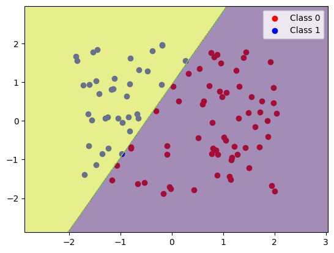
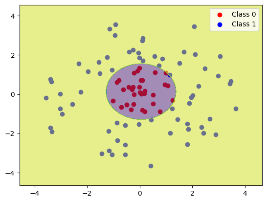
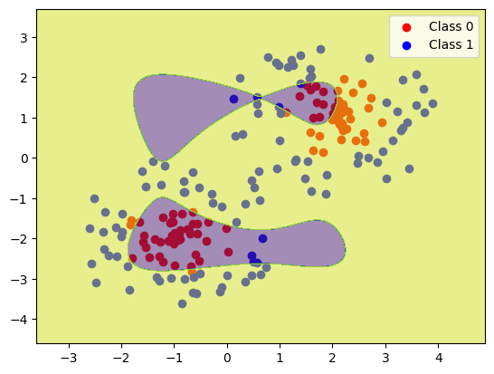
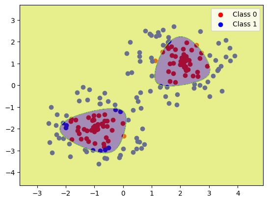
Next, you will implement binary classification with logistic regression.
The logistic model first computes a linear score
\[ z = XA \]
and then maps that score to a probability using the sigmoid function
\[ \sigma(z) = \frac{1}{1 + e^{-z}}. \]
Implement
logistic_prediction(x, A, get_modified_features) so that it
returns
\[ \hat{y} = \sigma(XA) \]
with shape (num_samples, 1).
Implement logistic_error(y_pred, y_true) as the average
classification error. A predicted probability greater than 0.5 should be
classified as 1, and a predicted probability less than or equal to 0.5
should be classified as 0.
For binary labels \(y_i \in \{0,1\}\), the logistic loss is
\[ L(\hat{y}, y) = - \sum_i \left[ y_i \log(\hat{y}_i) + (1-y_i)\log(1-\hat{y}_i) \right]. \]
Implement logistic_loss(y_pred, y_true) using vectorized
NumPy operations. Do not use a loop. Since \(\log(0)\) is undefined, clip probabilities
to a small interval such as \([\epsilon,
1-\epsilon]\) before taking logs.
The gradient of logistic loss with respect to \(A\) is
\[ \nabla_A L(A) = X^T(\hat{y} - y). \]
Implement get_logistic_regression_gradient(A, X, y).
Since X is already the modified feature matrix, you can
call logistic_prediction with an identity feature
transform, for example:
lambda x: xFinally, implement get_logistic_regression_features(x).
The first two datasets can be solved with simple linear or polynomial
features, but the third dataset requires a feature transform you design
yourself. Your returned feature matrix must have one row per data point,
must be finite, and should allow gradient descent and stochastic
gradient descent to reach at least 90% accuracy on each provided
dataset.
In task planning, a symbolic state describes facts such as
block_a_is_clear or block_b_is_on_block_c.
Here you will infer 36 Boolean predicates from 784 noisy perception
features. Each predicate has its own logistic-regression weight vector,
so one matrix multiplication predicts all labels:
\[ X\in\mathbb{R}^{N\times(d+1)},\qquad W\in\mathbb{R}^{(d+1)\times P},\qquad \hat Y=\sigma(XW). \]
Here \(N\) is the number of samples,
\(d\) the number of input features, and
\(P\) the number of predicates. The
final column of \(X\) is a bias feature
of ones. The provided predicate_prediction uses your Part 6
logistic prediction with an identity feature transform.
Implement the marked sections of compute_loss,
compute_gradient, preprocess_data, and
get_positive_weights in
predicate_classifier.py. These functions are grouped at the
end of the file. Data loading, training, evaluation, plotting, and model
selection are provided. The data file is
data/task_planning_perception_features.npz; the provided
split helper reserves 270 examples for training, 90 for validation, and
400 for testing.
Implement the binary cross-entropy (BCE) calculation in
compute_loss and its gradient in
compute_gradient:
\[ L_{\mathrm{data}}=-\frac{1}{N}\sum_{i=1}^{N}\sum_{j=1}^{P}\left[y_{ij}\log\hat y_{ij}+(1-y_{ij})\log(1-\hat y_{ij})\right], \qquad \nabla_W L_{\mathrm{data}}=\frac{1}{N}X^T(\hat Y-Y). \]
The template supplies predictions and clips probabilities before
logarithms to avoid log(0). Sum the losses over all labels
and divide by the number of samples, not the number of labels. Store the
scalar data loss in bce. The gradient must have shape
(num_features + 1, num_predicates), matching
weights. Initially, use equal label weights and no
regularization.
We evaluate predictions using exact-match accuracy:
a sample is correct only if all 36 labels match after thresholding
probabilities at 0.5. BCE is a smooth training objective,
but lowering BCE does not always increase exact-match accuracy. The
provided trainer uses mini-batch SGD and selects the first checkpoint
with the highest validation exact match.
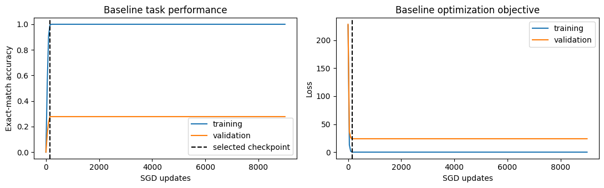
Features with large values can dominate gradient updates even when
smaller features contain useful information. Complete
preprocess_data to normalize each input feature when
normalize=True:
\[ \mu_k=\operatorname{mean}(X_{:,k}),\qquad s_k=\operatorname{std}(X_{:,k}),\qquad X'_{ik}=\frac{X_{ik}-\mu_k}{s_k}. \]
Compute means and standard deviations over samples, retaining shape
(1, num_features). Replace standard deviations below \(10^{-8}\) with 1.0. Store
these training statistics in PreprocessState. When a state
is supplied, reuse its statistics for validation or test data instead of
recomputing them. Without normalization, leave features unchanged. The
provided code appends the bias column, producing shape
(num_samples, num_features + 1). Do not modify the input
array in place.
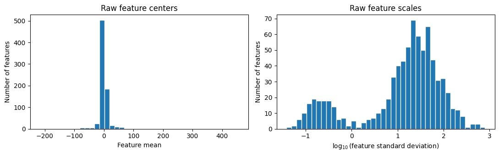
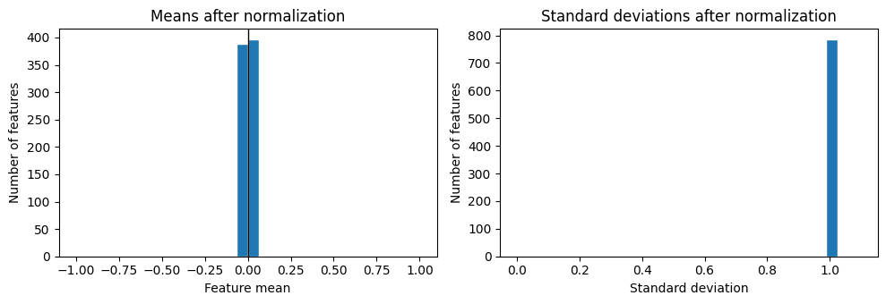
With more features than training examples, the model can fit noise.
Extend compute_loss with an L1 penalty on the non-bias
weights \(W_{\mathrm{nb}}=W[:-1]\):
\[ L=L_{\mathrm{data}}+\lambda_1\lVert W_{\mathrm{nb}}\rVert_1. \]
The strength is given by l1_lambda. Store the penalty in
penalty, and add \(\lambda_1\operatorname{sign}(W_{\mathrm{nb}})\)
to gradient[:-1] in compute_gradient. These
arrays have shape (num_features, num_predicates). Do not
penalize the bias row. Use a subgradient of zero at a zero weight, as
returned by np.sign.
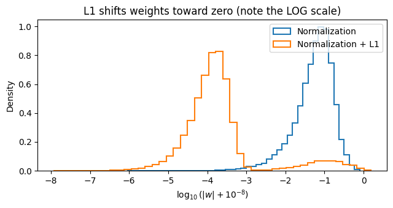
For rare predicates, ordinary BCE contains many more negative than
positive examples. Complete get_positive_weights to compute
one multiplier per predicate from its training-label counts:
\[ c_j=\operatorname{clip}\left(\left(\frac{n_j^-}{\max(n_j^+,1)}\right)^p,\ 0.5,\ 20\right). \]
Here \(n_j^+\) and \(n_j^-\) are the positive and negative
counts, and \(p\) is
positive_weight_power. Return an array with shape
(num_predicates,); the provided \(p=0\) path returns ones.
Extend both compute_loss and
compute_gradient to apply these multipliers to positive
labels only. Let \(a_{ij}=c_j\) if
\(y_{ij}=1\) and \(a_{ij}=1\) otherwise. Multiply each BCE
term by \(a_{ij}\) and use the weighted
data gradient
\[ \nabla_W L_{\mathrm{data}}=\frac{1}{N}X^T\left(A\odot(\hat Y-Y)\right). \]
\(A\), \(Y\), and \(\hat
Y\) each have shape (num_samples, num_predicates),
and \(\odot\) is elementwise
multiplication. If positive_weights is None,
use equal weights. Keep the L1 penalty and its gradient unchanged.
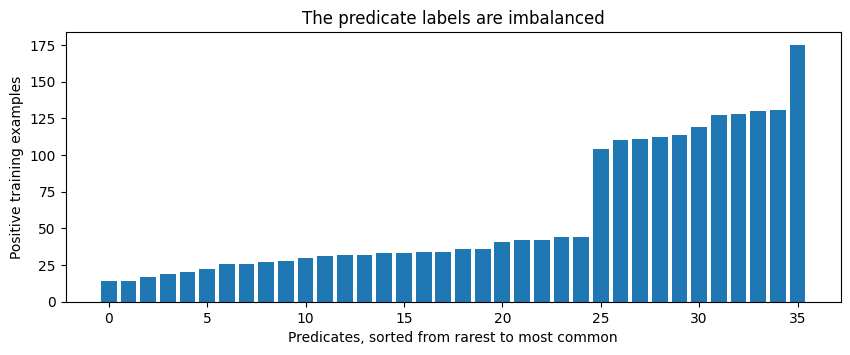
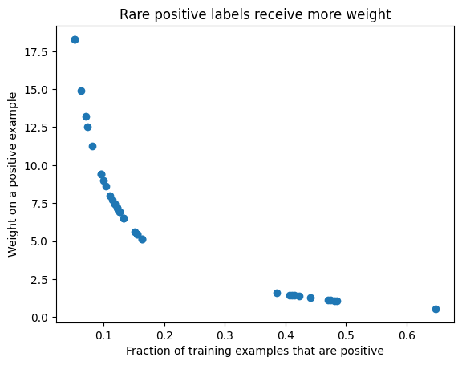
validation_experiment is provided and requires no
implementation on your part. It tries all eight configurations in
ABLATION_CONFIGS: normalization on or off,
l1_lambda in {0, 0.001}, and
positive_weight_power in {0, 1}. These are
hyperparameters chosen using validation data; the model weights and
preprocessing statistics are learned from training data.
For each configuration, the helper trains a model, transforms
validation inputs using that model’s training statistics, and measures
validation exact match. Every run uses the same seed, learning rate,
batch size, and update budget. The helper returns
(best_config, results), selecting the first configuration
with the highest validation score. Each result row contains the three
configuration values, val_exact_match, and
selected_update.
This is a deliberately small search to demonstrate model selection. Normally we would try many more values for regularization strength and positive-label weighting, and also consider different learning rates and batch sizes. Test data must not influence these choices.
The following results use seed 7. Comparing all subsets shows which components help alone and which help in combination:
| Components | Validation exact match |
|---|---|
| Baseline | 27.8% |
| Normalization | 58.9% |
| L1 | 30.0% |
| Positive weighting | 26.7% |
| Normalization + L1 | 97.8% |
| Normalization + Positive weighting | 44.4% |
| L1 + Positive weighting | 26.7% |
| Normalization + L1 + Positive weighting | 98.9% |
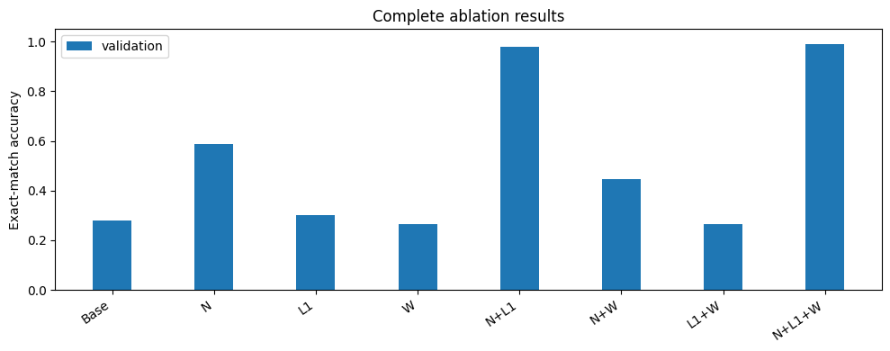
The provided final demonstration recreates the selected model with
the same seed and evaluates it on the test split once. Training and
validation remain separate because train_model uses
validation to select a checkpoint. The staff solution selects
normalization + L1 + positive weighting, achieving 98.9%
validation exact match and 98.2% test exact
match.
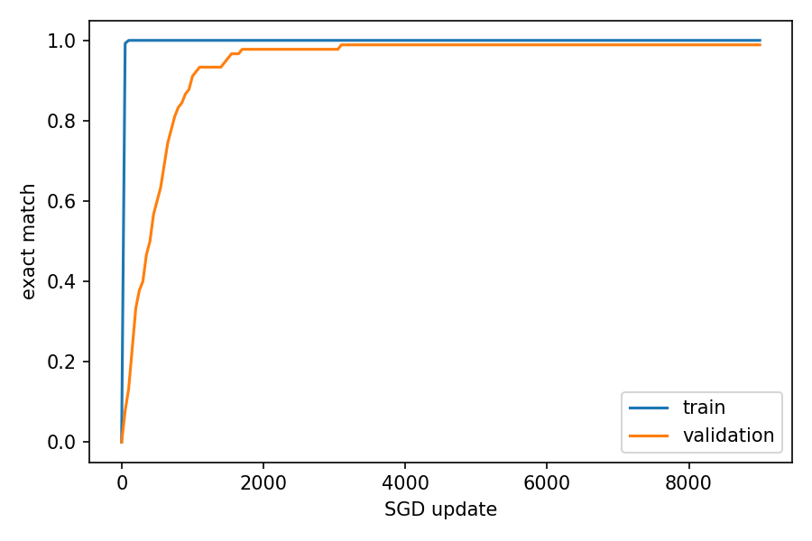
Run tests.py to check the five Part 7 tests. The loss
and gradient tests also accept "baseline",
"regularized", or "weighted" to check an
individual stage while implementing the functions.
Submit this assignment by uploading mp4.py and
predicate_classifier.py to Gradescope. Do not submit
tests.py, main.py, planar_arm.py,
or the data files. Before submitting, comment out or remove debugging
print statements, since excessive printing can slow down the autograder.
Notice that for this assignment you can just run all the tests in
tests.py to check your work before submitting.
Do not forget to access Gradescope from the Launch App button in Coursera so that your grade is automatically synced.
You are expected to be familiar with the general policies on the course syllabus, including academic integrity. In particular, this is an individual assignment, and you may not use external sources to write significant parts of your code for you.